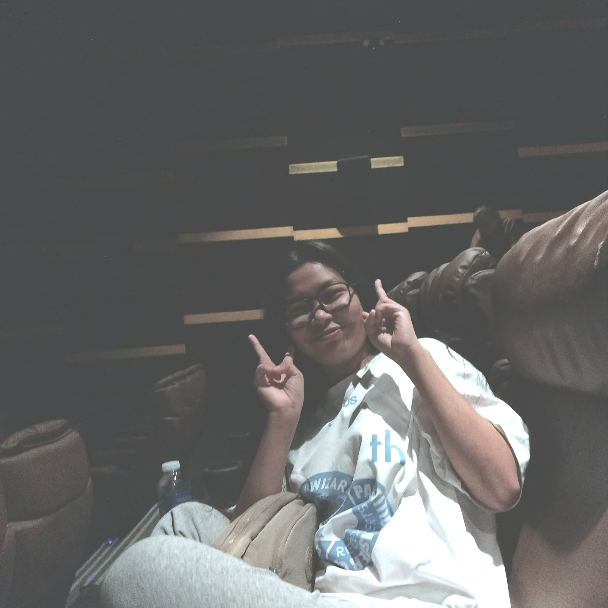

About the Developer
Princess Beverly R. Ala-an
Human Computer Interaction (ITE101)
DL1
About the Project
This project is an E-commerce Website created for the course Human Computer Interaction (ITE101) under Section DL1. The website focuses on food products and was designed with the goal of creating an experience that is both visually appealing and easy to use.
In developing this project, I applied key HCI principles such as user-centered design, clear navigation, consistency, and responsiveness. The layout, interactions, and overall flow of the website were carefully planned to help users browse products comfortably, view details effortlessly, and manage items in their cart without confusion.
All visual elements used in the website—including posters, product designs, and branding—were personally created to reflect creativity while still prioritizing usability. This project combines design and functionality, demonstrating how thoughtful interface design can improve user experience in an online shopping environment.